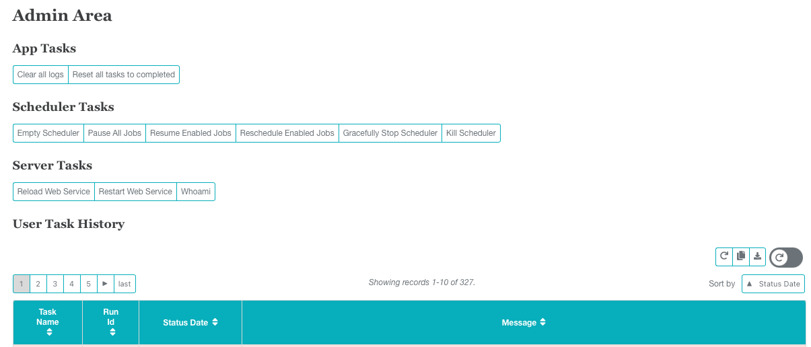

Admin¶
There are five primary sections to the admin page, the first three providing admin controls for Extract Management.
App Tasks¶
An admin can
Clear all logs. This will completely remove all logs from EM2’s database. Use with caution!
Reset all tasks to completed. This is useful after publishing a website update and the admin would like to clear all errored tasks.
Scheduler Tasks¶
An admin can
Empty Scheduler. This option will delete all schedules from EM2’s scheduler API. Tasks can be added back by rescheduling.
Pause All Jobs. This will ask the scheduler API to stop running any jobs until clicking “Resume Enabled Jobs.”
Resume Enabled Jobs. This will ask the scheduler API to resume running any enabled jobs that had been paused.
Reschedule Enabled Jobs. This option will empty the scheduler and then reschedule any enabled jobs.
Gracefully Stop Scheduler. This will allow the scheduler API to finish anything “in process”, and then shut off.
Kill Scheduler. This will turn off the scheduler. Keep in mind that task are run in the Runner API and any started tasks will not be affected.
Server Tasks¶
The server tasks are to aid in debugging website issues without accessing the webserver. They do require some server setup before working. See the readme for information on that process.
Reload Web Service. This option will reload all web service daemons.
Restart Web Service. This option will restart all web service daemons. This option could interfere with the user experience.
Whomai. Returns the web server user.
User Task History¶
This table is a list of all manual intervention in EM2.
User Login History¶
This table is a list of EM2’s access log.